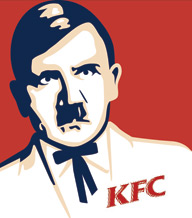
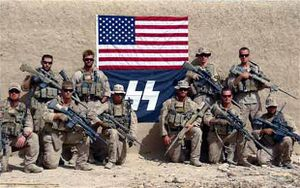
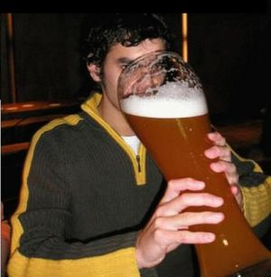

Nazi
 De: La Frikipedia, la enciclopedia extremadamente seria.
De: La Frikipedia, la enciclopedia extremadamente seria.
| De la serie tribus urbanas del mundo:
|
| Nazi
|
Ejemplo de la tribu

|
| Clásico nazi ario
|
|
| Hábitat
|
Alemania, Espiña, Argentina, etc. (pueblan todo el Mundo)
|
| Inteligencia
|
Los verdaderos nazis tienen mucha, los neonazis nula
|
| Frase favorita
|
¡Heil Hitler!
|
| ¿Peligroso?
|
Pues no si son buenos
|
| Obsesión
|
La raza aria (Giovanni)
|
| Notas
|
Nazis nie mehr wieder. Tienen un voley club dirigido por Adolf Hitler llamado Skauwrhalktlessne Voley Club.
|
«¡Heil Hitler!»
~ Nazi al ver una fotografía de su amor platónico
«Los superhombres arios tienen un polvazo que no se lo quitan de encima»
~ Führer en su libro Mein Shit
Nazi es sinónimo de superioridad o tecnologia avanzada, racista, inteligente, fascista, dictador, fan de Adolf Hitler, el de Gas Natural y demás agradables calificativos. Colega de Hitler, Mussolini, Franco, Chacumbele, Berlusconi, Bush, Perón entre otros.
Contracción de "Nazíopamatá", persona portadora de una ideología surgida en la Alemania de mediados del siglo XD, creada por un hombre bajito, canijo y con un bigotillo hortera y ridículo, pero que tenia muy mala leche, (Como todos los enanos, por cierto). Su símbolo es una cruz retorcida diseñada por Walt Disney.
El centro de Arqueología y Civilizaciones Antiguas del PP ha concluido, tras diversos estudios, que este movimiento ideológico ha resurgido en España (Is-Pain). El partido niega toda la veneración que los neo nazis puedan sentir por Aznar.
Ellos estipulan que el actual gobierno del (Fede Gonzalez, ya que no había inmigrantes y los GAL estaban a pleno rendimiento.
Principales exponentes del Nazismo
Jorge Arbusto con su banderita
Otro indige(gili)nazi. Dentro de poco va a haber más nazis negros que blancos, lo que hará que la tasa de suicidios entre los nazis supere a la de los emos.
Amiguetes del nazismo alemán, algunos nazis y otros no tanto, o bien terroristas, todo vale, la cuestión es joder: Mussolini, Bush, Pinochet, Franco, Bernardo Jara, Aznar, etc...
El más friki fue sin duda Hitler, junto a sus seguidores alemanes que le gritaban "Salve Hitler" al ritmo de la corneta de guerra. Como en esa época no habia consolas, "cedés" de música ni "deuvedés", los pobres nazis tenian que divertirse de algún modo, y anticipándose a la creación de Manhunt 2 para la güi y el asesino de la Katana (otro friki dañado), decidieron crear sus propios videojuegos en vivo y salir a matar judíos, gitanos y soldados del bando aliado (Que por cierto eran un juegos muy divertidos)ya que Hitler quería ser el único ario que quedase vivo para mandar él solo.
El bonus por sobrevivir era bastante alto, ya que a parte de la supervivencia (en ese sentido ganaban más que cualquier emo), podían ver su horrible situación reflejada en películas, a modo de denuncia social, como un chico que era pianista quien luego contó su historia en el cine.
Defienden la superioridad de la raza aria (Giovanni) (Mmmmm, y quien no)
Los soldados gérmenes germanos eran muy anticatalufos, por lo que lo primero que hicieron fue invadir Polonia y cargarse muchos polacos. Los que mataran muchos catalufos de mierda polacos podían luego aparearse con voluntarias noruegas que (eran putas) no tenían nada mejor que hacer.
Hitler también es recordado por darle la mayor alegría de su vida al director de la compañía de gas alemana, ya que adolfito no pensó en que los campos de concentración también daban facturas.
Si bien esa alegría le duró poco al directivo, porque cuando Hitler vió la factura se fue a la antartida y fingio su muerte. Aún así, y pese a toda esta penosa historia, siguen habiendo frikis en muchas partes que se las dan de neo-nazis (también conocidos como nanzis) por ejemplo los "boneheads" o "cabezas huecas" quienes están en todo el mundo, incluyendo a los indigenazis o nanzis de piel morena; las Prussian Blue y National Vanguard de los "Hestados Fundidos de América".
Estos neo nazis se caracterizan por no haberse leido ni siquiera el libro de Hitler, "Mi Ducha" (de gas para judios, se entiende), repetir machaconamente vivas y alabanzas a este dictador Ario, y salir a pegarle palizas a todo inmigrante, mariconazo de mierda homosexual o progre que ande suelto, esta gente es la verguenza del NacionalSocialista de hoy en dia.
También les gusta quedar con sus amigos los antifascistas (la misma mierda, pero del polo opuesto, les gusta pegar a todo el que no sea inmigrante), para emular la época dorada de los beat´em ups, pero sin vidas extras, continues, pausas o gracia alguna. Aunque en este caso siempre gana la sociedad, y joder, ya hay demasiados frikis.
Se rumorea que la güi de Nintendo envidia profundamente esas recreaciones tan realistas y salvajes de Double Dragon, Final Fight o Streets of Rage.
Uno de los ultimos exponentes nazis es Roocky, esa pequeña piedra con tendencias Roocky es inmortal, por lo tanto, tampoco podra verlo en la otra vida.
Nacionalsocialistas en la cultura pop
People village con un integrante nuevo.
 El coronel hitler, junto con su receta secreta para los judios que consite en tabletas de Zyklon B.
Los nacionalsocialistas, para bien o para mal, salen en muchos producciones de diversos medios haciendo de malos:
- Medal of Honor
- Indiana Jones y la última cruzada
- Wolfenstein 3D
- Return to Castle of Wolfenstein
- Commandos y su expansión
- Commandos 2
- Commandos 3
- Max Mosley
- Salvar al soldado Ryan
- Enemigo al acecho
- El pianista
- La lista de Schindler
- La Segunda Guerra Mundial (Aqui ellos son los buenos)
- Dragon Ball (El ejército de Red Ribbon y Goku cuando es Super Saiyajin)
- South Park (Véase Eric Cartman)
- Casablanca
- Argentina
- American History X
- La política española (PP)
- La historia de la humanidad
- The History Channel
- Cómics de la Edad Dorada
- La Caída
- Romper Stomper
- La Novicia Rebelde
- Street Fighter (Mister Bison y Shadaloo)
- Los documentales de NAZIonal Geografic
- Harry Petas (Y los mortifagos con su racismo sanguineo)
- Killzone (¿El jefe Hellgast no era calvo?, eso los hace nazis, como en Harry Potter!!)
- Metal Slug (o la insignia de los malos no les parece conocida?)
- La vida es bella
-
Pinocho
-
Estados Unidos
- Call of Duty
Modo de Vida
Los skinheads nacional socialistas son los caballeros jedi de la raza aria, por eso luchan contra el lado oscuro, que evidentemente esta lleno de negros, amerindios, asiaticos, rusos y moros.
Su comportamiento es el de cualquier persona que este dejando de fumar y no haya mantenido relaciones sexuales en un año por lo menos, es decir, encabronados.
Entre sus aficiones está el beber cerveza mientras levantan un brazo bien alto para que sus amigos vean lo bien que les huelen las axilas. Suelen llevar la cabeza rapada, esto es debido a que es su peinado padawan, que desaparece cuando adquieren conocimientos superiores tales como la lectura o el pensamiento racional.
¿Se hace o se nace?
Sin duda ambas cosas... tienes que nacer ario, o en su defecto ser deficiente y creer ser ario, mayoritariamente se da el segundo caso.
Pero desde luego hay factores que forjan al skinhead nacionasocialista:
- Traumas infantiles, de niño es prácticamente la marginación personificada, la gente se ríe de él, y los padres se avergüenzan cuando los demás descubren que es hijo suyo.
- Es obligatorio ser friki, o por lo menos que la gente te reconozca como tal.
- Esta prohibido tener amigos que no sean arios, o en su defecto de tu condición (ya sabemos que no todos los jedis son arios). Tener amigos de otras razas es delito, se puede tener un perro, pero de esos grandes que dan miedo.
- Por si la gente no se da cuenta tienes que llevar ropa que demuestre lo que eres... aunque haga 50 grados la bomber bien ceñida, y botas como las del payaso del McDonald's
- Hay que practicar mucho el racismo, no se puede tolerar que veas a un negro y no le insultes, en caso de que no lo hagas seras expulsado de la corte jedi para siempre
- Ser violento, pero no vale solo con serlo, hay que parecerlo en todo momento, hay que poner cara de muy malo y amenazar hasta las farolas por si acaso
- Tener en la repiza el librejo "Mein Kampf" o incluso dormir abrazado a este.
- Si se nace negro, pedirle perdón a Dios Hitler y hacerse un tatuaje en blanco en el pecho para demostrar que son más intelectualmente superiores de lo que parecen
- No tomar el sol, si llegaran a tomar el sol se pondrían morenos y se podrían confundir con un negro de raza inferior (sin tatuajes), por lo cual recibirían una paliza rápidamente y serian devueltos a su planeta de origen
- Caminar siempre por la calle como si fuera un desfile militar
- Atacar las tendencias de izquierda, el antifascismo y todo aquello que huela a comunismo (con razón los punks les odian).
- Estar siempre cabreado o/y tener cara seria, incluso en los momentos más felices de tu vida como tu boda hetereo u homo. Siempre que te hagan una foto poner esa cara y levantando el brazo claro está...
- Solo puede reírse uno cuando se burla, pega o insulta a un negro o indígena
- Opcional, tener algún tipo de ideología política, a esta parte llegan muy pocos, y es casi innecesaria por su alta implicación cultural, o ser de ultraderecha (para ellos es de ley).
- Esta prohibido tener amigos o conocidos esposas o lo que sea, judios.
- Es totalmente necesario tener en el armario 5 pares de pantalones militares, otros 5 de camisetas sin mangas y otros 5 de botas militares bien embetunadas.
Donde los encontramos
 ...Y los nazis decían que son enemigos de los estadounidenses... ¡¡¡pero si son el uno para el otro!!!
Son difíciles de ver aunque abundan en recintos para reses tales como campos de fútbol o conciertos de gente que canta de muy mala ostia y a ser posible sin camisa.
Las salas de tatuaje también suelen ser sus paraderos, ya que hay quienes se tatúan sus ideas para que no se les olviden por si acaso.
Normalmente salen en misiones que consisten en dar vueltas en coche para buscar enemigos del lado oscuro, u otros enemigos que ni ellos saben porqué lo son, pero el caso es que haya misión, siempre en grupos que superen en 20 al enemigo, los jedi no conocen el amor ni el honor y no pueden permitirse la derrota por ideas tan absurdas y tan poco nacionalsocialistas.
Sino abundan en zonas de megapijos, ya que estos aunque no sean arios ni de la raza superior parece que no molestan, ademas así se demuestra el orgullo anti-obrero de la orden, y si se puede también se intenta buscar mas ineptos mentales a los que unir a la causa.
Nazis mas conocidos
- Jesucristo
- Yhwach y los Quincy
- Adolf Hitler
- El tito mc
- Benito Mussolini
- Uryu Ishida
- El monstruo de espagueti volador
- Ivo Escobar
- El cabron que te mataba a golpes en el Call Of Duty
- El tio del Kentucky Fried Chicken
- El dr. Mengele lengele que ella fue.
- Benito Juarez
- Bob Esponja
- Tom Cruise
- Heidi (y el abuelito dime tu, donde estan los judios?)
Archivo:Chango.jpg Un claro ejemplo de 2 skinz, apunto de agarrate a ti como su piñata personal.
Como ser nazi al 100%
- Ponerse los orgasmos de Hitler con cascos para dormir.
- Odiar a los judios.
- Ser calvo los 365 dias del año (366 si es bisiesto)
- Odiar a los negros y a toda la familia de Memin Pingüin.
- Tener un pene de 5 centímetros de largo o menos.
- Tener dos penes de 25 centímetros de largo o más (uno adentro del culo y otro adentro de la boca).
- Utilizar botas militares todo el tiempo.
- Tener antepasados que hayan sido comunistas nazias
- Odiar a los hispanos.
- Tener colgando al cuello en todo momento un relicario con la foto del capitán cavernícola o de Hitler (es opcional).
- Odiar a la PC cuando se congela el monitor.
- Utilizar pantalones con manchitas militares o jeans, pero deben de estar mega ajustados, hasta que te corte la circulacion y se te engangrenen la piernas y los miembros.
- Odiar a los emos.
- Odiar a los canis (para esto no es necesario ser nazi).
- Tener un IQ igual o menor que el de un pollo.
- Odiar a los raperos.
- Escuchar solo musica
Blues RAC!
- Odiar a los cholos.
- Mirar el video de niño aleman loco
- ¿Ya dije odiar a los emos?
- Hacer creer a los demas que sabes hablar alemán.
- Odiar a los góticos.
- Beber cerveza hasta lograr tener cálculos en los riñones.
- Odiar demasiado a los judíos.
- Llevar siempre encima una pastilla de cianuro, por si acaso...
- No follar con putas negras, solo les valen las rubias (arias)
- No follar con putas, aunque sean arias, ya que ser puta es de judios.
- Odiar a los jebis.
- Aborrecer toda la musica que no se Oi!, y cada vez que escuche musica Oi!, debes de hacer el saludo nazi, sin importar que no sepas ni madre que es lo que dice la canción.
- Odiar a los pijos.
- Gritar "White Power!" a las cebras cada que vayas al zoo.
- Odiar a los wombats.
- Golpear como minimo a 8 personas cada día.
- Odiar al sujeto que ves en el espejo todas las mañanas.
- Cuando estés frente a un espejo, ponerte un peine debajo de la nariz para fingir que eres Hitler y hablar aleman a tu modo.
- Odiar a los emos.
- Odiar a los anarquistas.
- Odiar a los antifascistas (o los que están a favor de Tifa Lockhart).
- Odiar a los punks.
- Odiar a los ETArras.
- Odiar a Marx.
- Odiar a Lenin.
- Odiar a Trotski.
- Odiar a los "jambos"(esta jente que se viste con unos pantalones en la rodilla y una camisetas hasta la rodilla con cara de "disminuidos mentales"
- Ser un cobarde temeroso de la globalización. Bueno y de todo lo que no se de color blanco.
- Diciendo cada 2 minutos: "Soy mas fuerte que tu y ni tu ni nigun judío o negro me puede vencer".
- Ser unos yonkis amargaus.
- ¿Mencioné que solo follan con blancas, rubias con escotes ajustados al 1200%?
- Follar con perros rojos.
- Adorar al Führer, aunque sea moreno, canijo, y tenga familia judía
- Fumar cigarros sin filtro.
Diversiones
- Matar judíos.
- Matar muchos negros muñozes :B
- Conquistar paises o casas vecinas.
- Excluir a muñozes (negros)
- La principal diversión de este espécimen es machacar craneos.
- Tener relaciones homosexuales, o si no hay posibilidad de mantenerlas debido a impotencia, introducirse una foto del pene de Hitler en el ano.
- Se dice que están infiltrados en varios gobiernos del mundo.
- Tocar en la tuna.
- ¿¿Ya dije matar judios???
- Comprar cintas de Camela.
- Matarte a ti
- Cantar alegremente en alemán.
- Marchar.
- Disfrazarse de soldaditos.
- Matar más judíos.
- Plagiar la película 300 (mayoritariamente burros de carga).
- Poblar la luna (si, Hitler y su Luftwaffe a base de Ovnis).
- Amar judios
- Matar negros pero no tantos como judios
- Demostrar lo fuerte que es delante de los judios
- Matar judios
- Pegarse un tiro en la cabeza(¿Creiais que solo lo hacia el gran bigotudo H?)
- Ver videos porno de maduritas negras.
Frases típicas
 Tipica cerveza nazi tamaño mini de bolsillo, para emergencias.
- ¡Fuera negro!
- "Putos Negros, putos judíos, putos gays, putos rojos, putas putas!! ...bueno putos todos de ser posible"
- "Si alguna vez tengo novia, será blanca"
- "Las drogas son la degeneración, eh tío.. ¡una cerveza!"
- "Yo ya colgué las botas"
- "Pero si yo no soy nada, no sé de política"
- "En México todos son indigenas"
- "Mama déjame dinero pa salir"
- "¡Qué buenORRA esta esa negraCA!"
- "¡Heil Hitler!"
- "¡¡Sin gel!!* "¡
- "Esos sudacas, me dan ganas de patearles el trasero y que vuelvan a su país de origen tercer mundista"
- "¡¡Hil y Polla!!"
- "Fucking Judem"
- "¡Corramos, que somos menos de 30!"
- "ayer hubo un accidente y murieron dos personas y un boliviano"
- "¡Soy de centro!, no como esos judios de mierda"
- "Yo no le pegaría a una mosca, (silencio) blanca."
- "¡Pero si le estoy haciendo un favor al mundo!"
- "¡Bankai!"
- "Haffyussen nichtnachdorfsesen nur neunishaafemitsundsonatssitcht (traducción: ¡negro!)"
- "¡Pero, si Yo soy apolitio ahora!"(Palabras pronunciadas por un bonehead mintras se tapa con el abrigo la camiseta con la céltica y el white power, mientras busca la forma de escapar de los punks que lo rodean).
- ¡Viva el führer, viva Franco y viva Mussolini! Lema de un neo-nazi bien preparado.
- "Cuando veo esa jodida cruz me dan ganas de invadir Polonia".
- "La Historia la escriben los vencedores, y los vencedores escriben lo que quieren".
- Es lebe Deutschland! Heil mein Führer! Viva la Italia e viva il Duce! Nippon banzai! Hirohito banzai!
Enlaces Externos
| Tribus Urbanas
|
 Universales Universales
 Españolas Españolas
 Argentinas Argentinas
 Chilenas Chilenas
 Colombianas Colombianas
 Mexicanas Mexicanas
 Peruanas Peruanas
 Venezolanas Venezolanas
|
Autor(es):
- Krusher
- Nexo
- Fordus
- LC0
- Juantxorena
- Anaconda
- NaTTi
- Barbadeus Motsand
- Manchado
- Doctor grijander
Frikipedia 2005-2016, Licencia
GFDL 1.2 - Extraído por FrikiLeaks